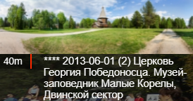
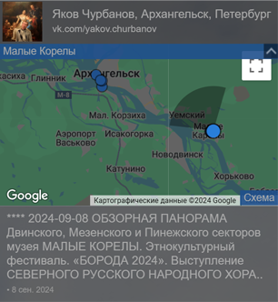
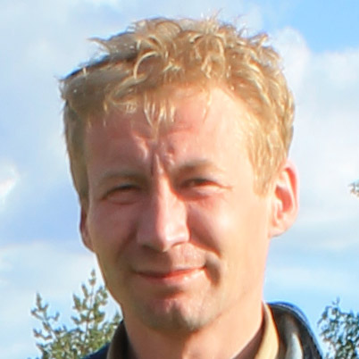

« В Архангельск(уЮ) вокруг марш! ». Начало виртуального путешествия.
Ссылка
www.vk.cc/cDw4SQ
Архангельская область / Архангельск . Идея, Реализация тура, Наземные панорамы -Яков Чурбанов
Количество звездочек в начале описания панорамы обозначает:
***** сверхвысокое,
**** высокое,
*** среднее,
** невысокое (события, для обзора)
Архангельск:
1973...2010-2024 года,
1973,
2010,
2011,
2012,
2013,
2014,
2015,
2016,
2017,
2018,
2020,
2021,
2022,
2023,
2024
Архангельская область:
2010-2024 г.,
2010,
2011,
2012,
2013,
2014,
2015,
2016,
2017,
2020,
2021,
2022,
2023,
2024
Панорамы для начала виртуальных экскурсий по интересным местам Архангельска :
Главная КАРТА-СХЕМА. Красная пристань, Арт-объект "ОКНО В АРКТИКУ" ,
Архангельск с воздуха, Аэропанорамы (все ▼)
Над морским музеем ,
Над Двиной, ул.Урицкого ,
С пляжа, пл.Мира
Над морским музеемГородскогй рейд, Над Двиной, ул.Урицкого
С кромки пляжа, пл.Мира
---------------------------------------------------------------
Заостровье: д.Рикасово, д.Великое, д.Перхачево (все ▼)
Аэропанорама, Заостровье, д.Рикасово. Храм Сретения Господня и Покрова Божией Матери.
Аэропанорама, Заостровье, д. Рикасово. Храм Сретения Господня и храм Покрова Божией Матери (деревянный). Заостровье (1) д. Рикасово. Храм Сретения Господня и храм Покрова Божией Матери (деревянный).
Заостровье (2 д. Рикасово. Храм Сретения Господня.
Заостровье (3) д. Рикасово, Храм Сретения Господня (Вход)
Заостровье (3) д.Великое, Вид на Храм Сретения Господня в д.Рикасово
----------------------------------------- Наземные: Красная пристань. Обзорная панорама. Арт-объект "Окно в Арктику". Набережная Северной Двины, Красная пристань, вид на морской музей и Т/Х "коммунар", Морской и речной вокзал, пароход "Гоголь", Стела «400 лет Архангельску», Набережная Северной Двины, пл. Ленина - главная площадь города, Пригородный речной вокзал, Вид на Кузнечевский мост, р.Кузнечиха и Соломбалу, Вид на Морской и речной вокзал. 2012г. Панорамы для начала виртуальных экскурсий по интересным местам Архангельской области:
По Сольвычегодску: КАРТА-СХЕМА , Обзорная с колокольни
По Малым корелам: , КАРТА-СХЕМА , Аэропанорама , Обзорная-СЕНОФЕСТ-2024 , Обзорная-БОРОДА-ФЕСТ-2024
По Кенозерскому национальному парку: Все по парку , списком Каргопольский сектор , Плесецкий сектор
Подборки панорам по городам и населенным пунктам - списком:
Сольвычегодск , Малые Корелы Северодвинск , д.Патракеевка , Соловки , Рикасово (Заостровье) , д.Перхачево, Сийский монастырь
Музеи:
- Малые Корелы:
Главный вход , Усадьба М.Т. Куницыной - выставочный зал , Дом коммерческого собрания
- Сольвычегодский музей-заповедник:
(Полный виртуальный тур экспозициям музея на официальном сайте www.solimus.ru/tour/ ) Домик Сталина , Благовещенский собор , Дом купцов Хаминовых
Фестивали:
Малые корелы: («Борода» 2024 , «Сенофест» 2023), д. Перхачево: ``Перекрестки Севера`` (2023 , 2024 ), Архангельск: Фестиваль уличных театров ( 2022)
Прочее интересное - списком:
Памятники Архангельска и области. , Музеи Архангельска и обл.(можно виртуально посетить) , Достопримечательности , Арт-объекты,стелы,панно и прочее , Концертные залы, культурные центры, дома культуры и пр. , Театры .Торговые Центры
Храмы , церкви , часовни - все ,
Торговые центры , Магазины и отделы сувениров , Гостиницы, гостевые дома, санатории Суда и Причалы
Подборка интересных панорам разных лет разных мест за 2010-2024г.
``В Архангельск(уЮ) вокруг марш!``
В окне браузера вы видите:
1. Саму панораму с указателями перехода на другую панораму (стрелочка или «вертолетик»)
При наведении на них мышь, вы увидите:

- А. Миниатюру-превью панорамы
- Б. Расстояние до нее относительно вашего положения
- В. Дату и описание панорамы
2. Панель информации:

- А. Информация об авторе панорамы.>
- Б. Спутниковая карта (ее можно переключить в режим "Схема" и "Гибрид")
с вашим местоположением просмотра и панорамами, на которые вы можете перейти
- В. Описание панорамы
- Г. Дату съемки
- Е. Регион, населенный пункт, место съемки
Количество звездочек означает:
-> Синие стрелочки:
* Обзорные не высокой детальности. Можно пропустить.
** Репортажные и прочие интересные не высокой детальности.
-> Черные стрелочки:
*** Стандартного качества, снятые на «ФишАйную» оптику. На нее снимают большинство фотографов.
**** Высокодетальные музейного качества, снятые мной на обычную оптику.
***** СВЕРХвысокодетальные панорамы (Двух и более гигапиксельные), снятые мной на обычную оптику.
Малые Корелы, обзорная, фестиваль `БОРОДА-2024`) Архангельск, кран, набережная, ул Шубина. 2014г.) Северодвинск, Вид на город, Севмаш и Белое море. 2013г.)
Стерео панорам 3D .Для просмотра нужны анаглифические очки с стеклами левое и правое - красный/циан(red/cyan).
Смольный собор, Петербург.
3. Все панорамы вы можете посмотреть на спутниковой карте
С серой панели внизу вы можете:
- Получить код для вставки панорамы на свой сайт (это бесплатно и совершенно легально)
- Поделиться в СоцСетях
- Просмотреть списком панорамы по темам. Например `.Музей, .памятник, .храм`-они разделены запятыми
- Переключиться в полноэкранный режим
- Комбинацией `Ctrl_+` и `Ctrl_-` вы можете увеличить/уменьшить значки и тексты
- Для возврата к КАРТЕ-СХЕМЕ, Посмотрите под ноги и найдите синюю стрелочку или инфоточку или поищите синюю стрелочку на небе.
- Если вы находитесь на месте съемки панорамы и ваш смартфон имеет встроенный гироскоп и компас, вы можете коснуться иконки и виртуально оглядеться, покрутив смартфон (режим дополненной реальности "AR") в том же месте в другое время и даже попасть в 1973 год !
--- Кратко об особенностях этого тура:
А. Вы можете вставить любую панораму к себе на сайт.
Б. Легко поделиться ей в соц сетях со своими знакомвми
В. Видеть расстояния (в метрах или километрах) до соседних панорам
Г. Искать определенные панорамы или их описаные на них объекты/события по слову через окошко поиска (например Заостровье, Соловки, `сенофест` )
Ж. После регистрации на сайте https://1panorama.ru вы сможете:
Описывать места, объекты, события "инфоточками" на уже выложенных панорамах, тем самым дополнив виртуальный тур интересными сведениями. 😀.
Так же комментировать панорамы, дополнять информацию, добавлять свои фото или ссылки в коментариях к панорамам. ✍
 Страничка автора в ВК -> vk.com/yakov.churbanov Яков Чурбанов
Почта chyl@mail.ru , Об авторе тура, портфолио на сайте -> 1panorama.ru
Личный сайт c другими работами автора -> https://www.churbanov.net/
Я проверенный (рекомендованный) партнер сервиса Яндекс - карты - панорамы по Архангельску и Архангельской области.
Панорамы со мной разных лет, подборка.
Наверх, в начало страницы